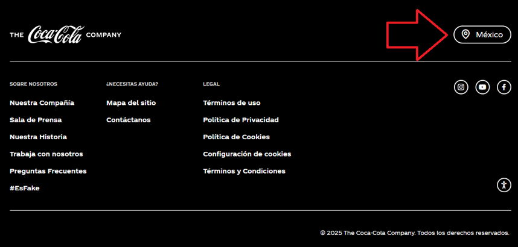
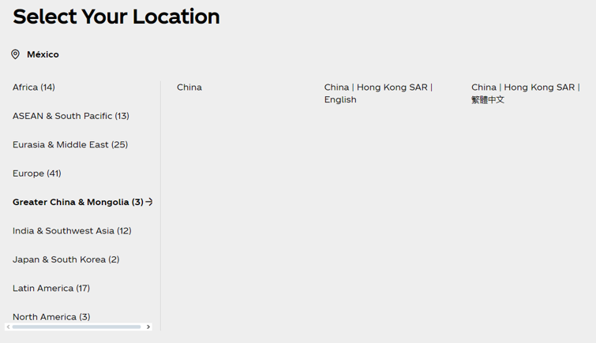

Identificación de Elementos Traducibles en Sitios Web
Descubre y analiza los diversos tipos de contenido que requieren traducción y localización en sitios web globales, explorando tanto aspectos técnicos como implicaciones culturales.
Resumen del Ejercicio
En esta actividad, vas a identificar varios tipos de elementos traducibles en el sitio web de Coca-Cola con que trabajarás como traductor web. Examinarás cómo las marcas globales toman decisiones sobre estandarización versus adaptación, analizando tanto el contenido visible como las decisiones técnicas ocultas que dan forma a las experiencias de las personas que usan el web de diferentes mercados.
Al investigar ejemplos del mundo real, desarrollarás conciencia crítica sobre cómo las consideraciones políticas, las limitaciones técnicas y la sensibilidad cultural se intersectan en el trabajo profesional de localización.
Objetivos de aprendizaje
- Identificar los elementos traducibles en sitios web, incluyendo menús, encabezados, pies de página, gráficos, videos y botones
- Analizar los aspectos técnicos de la localización y traducción de diferentes componentes de los sitios web
- Evaluar las consideraciones culturales y políticas que influyen en las decisiones de localización
Instrucciones
Mira el Video Introductorio
Mira el video 'Website Localization' por Anthony Pym en inglés. Pon atención a los ejemplos de estandarización y adaptación sobre los que habla Pym en el video.
Explora el Sitio Web
Visita el sitio web de Coca-Cola para el mercado mexicano.
Consejo de Aprendizaje: También puedes visitar las versiones para otras ubicaciones globales para hacer comparaciones y profundizar tu comprensión de las personalizaciones que ocurren durante la localización.
Identifica un Elemento Traducible
Identifica un elemento traducible en el sitio web y su ubicación (menús, encabezados/pies de página, gráficos, videos, botones, etc.).
Investiga los Aspectos Técnicos y Culturales
Investiga los aspectos técnicos de la localización y traducción de ese tipo de contenido, así como los aspectos culturales que se deben considerar para la localización.
Documenta tu Análisis
Escribe una publicación sobre el elemento que identificaste. Incluye capturas de pantalla del contenido pertinente en su ubicación. En tu publicación, analiza los aspectos técnicos y culturales del trabajo de traducción y localización. Incluye las fuentes que consultaste en tu investigación.
En caso de que te sirva, puedes revisar el análisis de ejemplo sobre el selector de ubicación/idioma de Coca-Cola a continuación.
Ejemplo: Selector de Idioma
Un selector de idioma puede parecer simple, pero este ejemplo revela las decisiones técnicas, lingüísticas y políticas complejas involucradas en una localización efectiva.
Ubicación del Selector en el Pie de Página y Complejidades de Localización Regional
En el pie de página del sitio web de Coca-Cola, hay un selector de idioma a través del cual les usuaries pueden elegir una región para ver el contenido en la lingua franca de esa región.


Curiosamente, al hacer clic en el selector, el contenido aparece en inglés en lugar de español. Por lo tanto, el selector de ubicación necesita traducción para completar la localización al español mexicano.
No solo eso, el selector de ubicación también refleja un sesgo hacia China continental. En la captura de pantalla, he seleccionado "Gran China y Mongolia", pero Taiwán no aparece como ubicación dentro de esta región. Esto puede ser porque a China continental no reconoce la condición de estado de Taiwán, aunque Taiwán se considera un país independiente.
En términos del idioma del sitio web localizado, esto marca una diferencia significativa. Si les usuaries de Taiwán acceden a la localización de China, el contenido se presentará en chino simplificado, mientras que les taiwaneses leen y escriben en chino tradicional.
Anteriormente, cubrimos cómo el selector de ubicación de Coca-Cola implica apoyo a la postura política de China continental hacia Taiwán. Esto podría reflejar la postura política de la empresa. Desafortunadamente, es igualmente probable que nadie pensara en absoluto sobre las implicaciones del diseño del selector de idioma. Esta no sería la primera vez que Coca-Cola no reconoce las implicaciones políticas de su contenido.
Un ejemplo destacado de la importancia de la sensibilidad cultural en la localización es la controversia de Coca-Cola México en 2015 con su campaña 'Abre tu Corazón', donde un anuncio que pretendía mostrar inclusión provocó una fuerte reacción negativa de la comunidad Mixe en Oaxaca por su perspectiva colonialista y estereotipada. La campaña tuvo que ser retirada y la empresa se vio obligada a disculparse públicamente, demostrando cómo incluso las marcas más grandes pueden sufrir daños significativos a su reputación cuando no consideran adecuadamente el contexto cultural local en sus estrategias de marketing y comunicación.